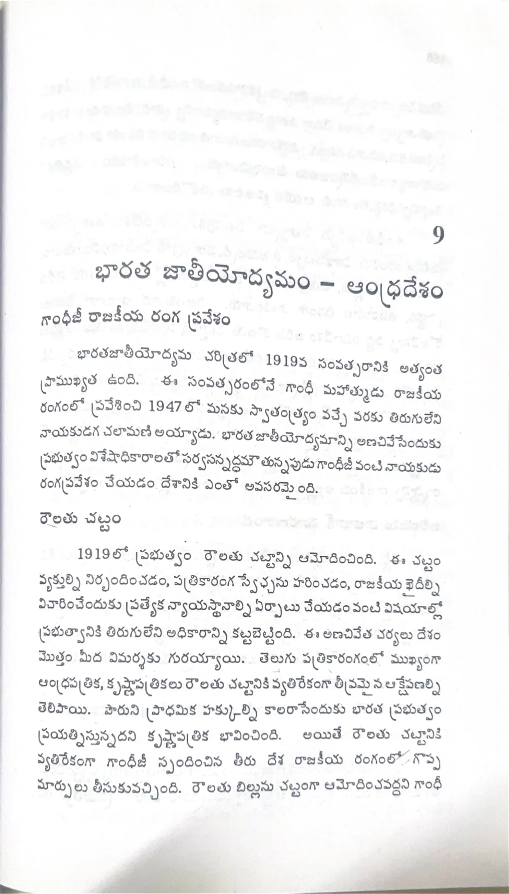

ముద్రిత పుట 157
scanతో మాన్యువల్గా ధృవీకరించిన పాఠ్యం

9 భారత జాతీయోద్యమం - ఆంధ్రదేశం గాంధీజీ రాజకీయ రంగ ప్రవేశం భారతజాతీయోద్యమ చరిత్రలో 1919వ సంవత్సరానికి అత్యంత ప్రాముఖ్యత ఉంది. ఈ సంవత్సరంలోనే గాంధీ మహాత్ముడు రాజకీయ రంగంలో ప్రవేశించి 1947లో మనకు స్వాతంత్ర్యం వచ్చే వరకు తిరుగులేని నాయకుడుగా చలామణి అయ్యాడు. భారత జాతీయోద్యమాన్ని అణచివేసేందుకు ప్రభుత్వం విశేషాధికారాలతో సర్వసన్నద్ధమవుతున్నప్పుడు గాంధీజీ వంటి నాయకుడు రంగ ప్రవేశం చేయడం దేశానికి ఎంతో అవసరమైంది. రౌలట్ చట్టం 1919లో ప్రభుత్వం రౌలట్ చట్టాన్ని ఆమోదించింది. ఈ చట్టం వ్యక్తుల్ని నిర్బంధించడం, పత్రికారంగ స్వేచ్ఛను హరించడం, రాజకీయ ఖైదీల్ని విచారించేందుకు ప్రత్యేక న్యాయస్థానాల్ని ఏర్పాటు చేయడం వంటి విషయాల్లో ప్రభుత్వానికి తిరుగులేని అధికారాన్ని కట్టబెట్టింది. ఈ అణచివేత చర్యలు దేశం మొత్తం మీద విమర్శకు గురయ్యాయి. తెలుగు పత్రికారంగంలో ముఖ్యంగా ఆంధ్రపత్రిక, కృష్ణాపత్రికలు రౌలట్ చట్టానికి వ్యతిరేకంగా తీవ్రమైన ఆక్షేపణల్ని తెలిపాయి. పౌరుని ప్రాథమిక హక్కుల్ని కాలరాసేందుకు భారత ప్రభుత్వం ప్రయత్నిస్తున్నదని కృష్ణాపత్రిక భావించింది. అయితే రౌలట్ చట్టానికి వ్యతిరేకంగా గాంధీజీ స్పందించిన తీరు దేశ రాజకీయ రంగంలో గొప్ప మార్పులు తీసుకువచ్చింది. రౌలట్ బిల్లును చట్టంగా ఆమోదించవద్దని గాంధీ